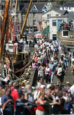

The Golowan Festival, Mazey Day & the Newlyn Fish Festival
 The Golowan festival (Cornish for midsummer) is the festival of St. John and is held in Penzance each year in late June. Although it is an old tradition, it was revived by a group of artists and local schools in 1991 in order to remember the local area heritage. The festival is ten days long, culminating in the Mazey weekend and notably Mazey Day on the Saturday.
The Golowan festival (Cornish for midsummer) is the festival of St. John and is held in Penzance each year in late June. Although it is an old tradition, it was revived by a group of artists and local schools in 1991 in order to remember the local area heritage. The festival is ten days long, culminating in the Mazey weekend and notably Mazey Day on the Saturday.
A Brief History
Golowan was one of the last mid summer festivals practiced in Cornwall. In the 1890’s, the Penzance government outlawed the festival due to the rising insurance premiums for the towns business community. Traditionally the towns streets were lined with alight tar barrels which were paraded around. The surrounding hills had bonfires set at the top, throwing dancing shadows all around mounts bay and beyond.
Read more about the Golowan Festival on West Cornwall Events.
Golowan Festival 2013 - Dates to Remember
The festival this year is between 21st June to 30th June.
- Mazey Eve - Friday 28th June 2013
Penglaz, the Penzance obby oss is set loose around the quay area, leading a procession of dancers and musicians. There is a fair held next to jubilee pool and there is many music events in the surrounding area, including a large music tent at the quay. - Mazey Day - Saturday 29th June 2013
Mazey Day centres around the parades and other street events in the centre of town. - Quay Day - Sunday 30th June 2013
Stalls and musical events are held on the quay front. This day has a much more laid back feel to it, and is an ideal day to be part of the celebrations.
For Further information, please visit
www.westcornwallevents.co.uk/golowan
www.golowan.org

Newlyn Fish Festival
The Newlyn fish festival is held every year on the late august bank holiday, and celebrates Newlyn's, and indeed Cornwall's, long fishing culture and heritage. Held in the port area of Newlyn's sea front, the celebrations include stalls, fishy demonstrations, open vessels, demonstrations by the RNLI and entertainment from singers and musicians alike.
The festival was started in 1991 by Len Scott who wanted to promote and protect the area local areas fishing industry. The proceeds from the festival are given to the Fisherman's mission, who help the family's of fishermen who were injured or lost at sea. So far the festival has been blessed with nothing by fine weather over the years, a tradition which all hopes will continue long into the future.
For more info, visit Newlyn Fish Festivals Homepage
Montol Festival
The winter solstice (Cornish: montol) is celebrated by Penzance and the surrounding towns and villages yearly in December. The towns people are encouraged to wear masks and fancy dress. Much like the Golowan festival, the celebrations last 10 days, culminating at the weekend with montol eve, lantern parades through the streets and a beacon at the leskudjack castle.
Many believe Montol is the legendary King Arthur's birthday.